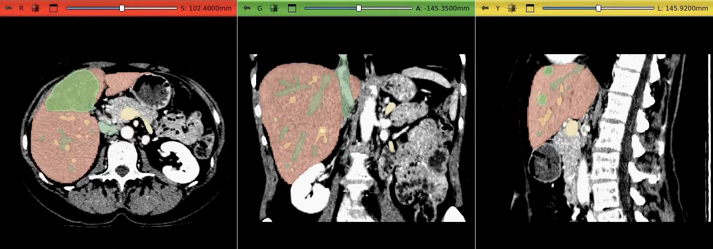
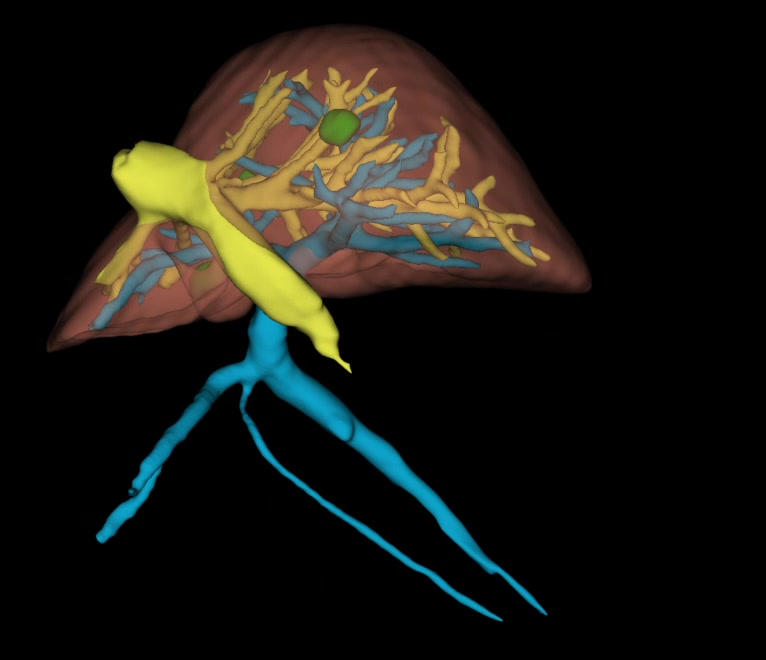
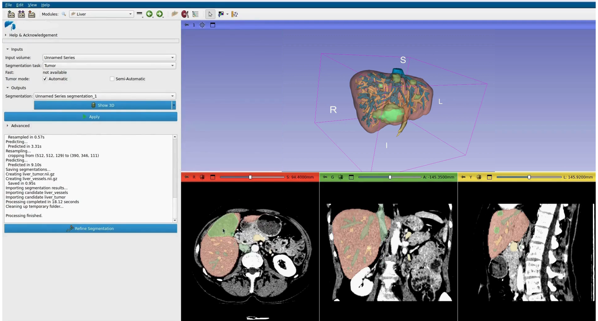

Liver digital twinJumeau numérique hépatique
Turning abdominal CT volumes into patient-specific 3D liver models.Transformer des volumes CT abdominaux en modèles hépatiques 3D patient-spécifiques.
An end-to-end project at a medtech startup: I worked on the full pipeline, from data preparation and model training to clinical validation and deployment in a standalone application.Un projet de bout en bout en startup medtech : j'ai travaillé sur toute la chaîne, de la préparation des données et de l'entraînement des modèles jusqu'à la validation clinique et au déploiement dans une application autonome.
- ContextContexte
- Medtech startup, FranceStartup medtech, France
- PeriodPériode
- Feb 2025 – May 2026Fév. 2025 – Mai 2026
- TargetsCibles
- Parenchyma, vessels, lesions, liver segmentsParenchyme, vaisseaux, lésions, segments hépatiques
- ModalityModalité
- CT — DICOM and NIfTICT — DICOM et NIfTI
01
Data preparationPréparation des données
Each anatomical structure required a different approach.Chaque structure anatomique demandait une approche différente.
The liver is relatively large and easy to identify on CT, while lesions can be small and highly variable. Vessels are thin and difficult to segment because of their branching structure and low contrast. Liver segments are also more challenging because they depend on the internal anatomy of the liver.Le foie est relativement volumineux et facile à identifier sur CT, tandis que les lésions peuvent être petites et très variables. Les vaisseaux sont fins et difficiles à segmenter à cause de leur structure ramifiée et de leur faible contraste. Les segments hépatiques sont également plus difficiles, car ils dépendent de l'anatomie interne du foie.
For each target, I prepared the data and adapted the preprocessing and training strategy.Pour chaque cible, j'ai préparé les données et adapté la stratégie de prétraitement et d'entraînement.
- DICOM and NIfTI loading and conversionChargement et conversion des données DICOM et NIfTI
- Image resampling, orientation standardization and spacingRééchantillonnage des images, standardisation de l'orientation et du spacing
- Intensity normalizationNormalisation de l'intensité
- Patient-level train, validation and test splitsDécoupage train, validation et test au niveau patient
Tools:Outils : Python · PyTorch · DICOM · NIfTI

02
Model trainingEntraînement des modèles
I trained and compared several 3D segmentation models for the different anatomical structures.J'ai entraîné et comparé plusieurs modèles de segmentation 3D pour les différentes structures anatomiques.
For supervised segmentation, I worked with:Pour la segmentation supervisée, j'ai travaillé avec :
- 3D U-Net
- nnU-Net
- SwinUNETR
For small or difficult lesions, I used interactive segmentation methods when the automatic models were not accurate enough:Pour les lésions petites ou difficiles, j'ai utilisé des méthodes de segmentation interactive lorsque les modèles automatiques n'étaient pas assez précis :
- MedSAM
- MedSAM2
The choice of model depended on the structure and on the amount of available training data.Le choix du modèle dépendait de la structure à segmenter et de la quantité de données d'entraînement disponibles.
Tools:Outils : Python · PyTorch · 3D U-Net · nnU-Net · SwinUNETR · MedSAM · MedSAM2
03
ValidationValidation
| StructureStructure | CasesVolumes | Dice |
|---|---|---|
| Liver parenchymaParenchyme hépatique | 1,403 CT | 0.96 |
| LesionsLésions | 303 CT | 0.88 |
| Liver segmentsSegments hépatiques | 197 CT | 0.89 |
| Hepatic vesselsVaisseaux hépatiques | 303 CT | 0.74 |
Vessel segmentation was the most difficult task because vessels are thin, branching and sometimes have low contrast on CT.La segmentation des vaisseaux était la tâche la plus difficile, car les vaisseaux sont fins, ramifiés et parfois peu contrastés sur CT.
The models were not evaluated only with Dice scores. Their outputs were also reviewed with clinicians to check whether the segmentations were anatomically correct and useful in practice.Les modèles n'ont pas été évalués uniquement avec des scores Dice. Leurs sorties ont aussi été relues avec des cliniciens afin de vérifier si les segmentations étaient anatomiquement correctes et utiles en pratique.
Their feedback helped identify errors, improve the models and define the criteria for acceptable results.Leurs retours ont permis d'identifier les erreurs, d'améliorer les modèles et de définir les critères de résultats acceptables.

04
Application development and deploymentDéveloppement applicatif et déploiement
I developed a customized version of 3D Slicer for the project and integrated the trained segmentation models directly into the application.J'ai développé une version personnalisée de 3D Slicer pour le projet et intégré les modèles de segmentation entraînés directement dans l'application.
The interface was adapted to the clinical workflow so the user could load a CT scan, run the segmentation models, review the results, visualize the liver in 3D and export the final model without using scripts or a terminal.L'interface a été adaptée au workflow clinique afin que l'utilisateur puisse charger un scanner CT, lancer les modèles de segmentation, relire les résultats, visualiser le foie en 3D et exporter le modèle final sans utiliser de scripts ni de terminal.
The application allows the user to:L'application permet à l'utilisateur de :
- Load CT dataCharger les données CT
- Run the trained segmentation modelsLancer les modèles de segmentation entraînés
- Review and correct the segmentationsRelire et corriger les segmentations
- Visualize the liver, vessels, lesions and liver segments in 3DVisualiser le foie, les vaisseaux, les lésions et les segments hépatiques en 3D
- Export the final 3D modelExporter le modèle 3D final
Tools:Outils : Python · C++ · Qt · CMake · 3D Slicer

These results were obtained during an internal project in a proprietary medtech environment. They have not been published or peer-reviewed. The screenshots contain no patient-identifying information.Ces résultats ont été obtenus lors d'un projet interne dans un environnement medtech propriétaire. Ils n'ont pas été publiés ni revus par les pairs. Les captures ne contiennent aucune information permettant d'identifier un patient.
Contact
Tell me about your data and your goal.Parlez-moi de vos données et de votre objectif.
Open to roles in medical imaging, computer vision and AI.Ouvert aux postes en imagerie médicale, vision par ordinateur et IA.
I work on medical imaging projects from data preparation and model training to validation and deployment, with a focus on solutions that can actually be used in clinical workflows.Je travaille sur des projets d'imagerie médicale, de la préparation des données et de l'entraînement des modèles jusqu'à la validation et au déploiement, avec un focus sur des solutions réellement utilisables dans les workflows cliniques.